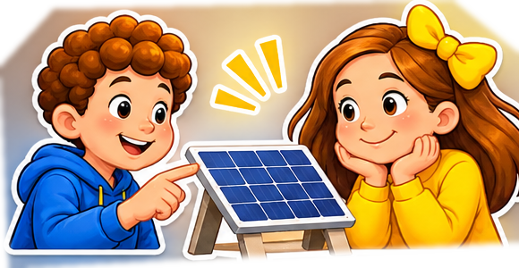
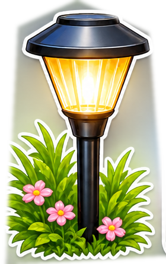
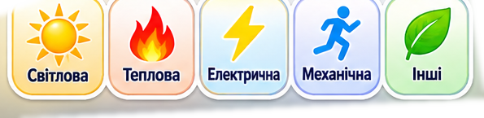
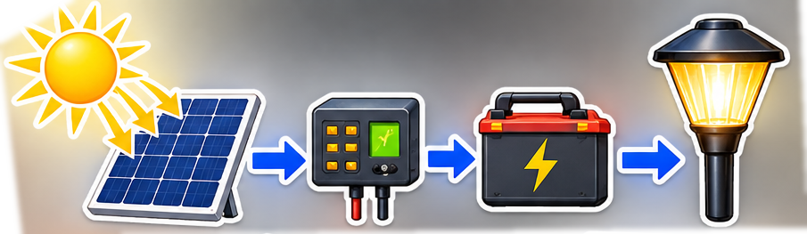
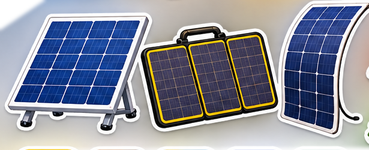
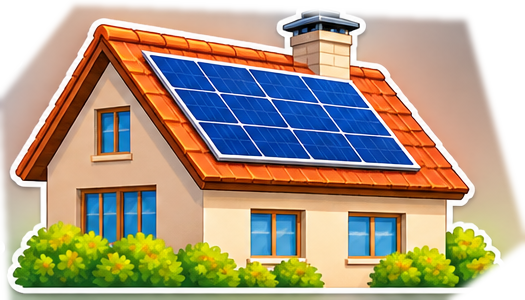
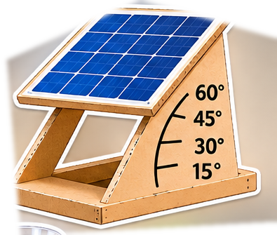
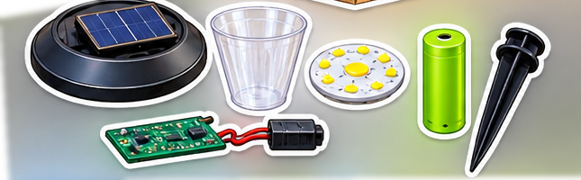
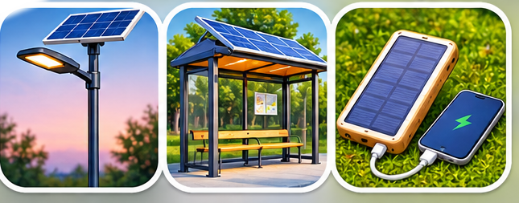

Де краще розмістити сонячну панель?
Досліджуйте · Моделюйте · Конструюйте

🎯 Проблема
Ви хочете встановити сонячний ліхтарик біля будинку. Де розмістити панель, щоб увечері він світив якомога довше?
Спочатку дослідіть, звідки береться енергія, а потім перевірте свої ідеї.

1. Якою буває енергія?
Енергія допомагає предметам рухатися, нагріватися та світитися. Натисніть на вид енергії, а потім — на відповідний приклад.

2. Як працює сонячний ліхтарик?
Сонячна панель перетворює частину світлової енергії на електричну. Контролер керує заряджанням акумулятора, який зберігає енергію для роботи ліхтарика ввечері.

Панель не зберігає енергію сама: для вечірнього світіння потрібен акумулятор.
3. Чому панелі зазвичай прямокутні?
Прямокутні сонячні елементи зручно розміщувати поруч без великих проміжків. Важливі не лише форма, а й площа, освітлення та затінення.
Порівняйте панелі: яка з них може мати більшу площу? Чи завжди більша панель працюватиме краще в тіні?

4. Ваша гіпотеза
Що найбільше вплине на отриману енергію? Оберіть припущення, яке перевірятимете першим.

5. Цифрова лабораторія «Злови сонячне світло»
Змінюйте параметри моделі. Порівнюйте відносний результат — це спрощена навчальна модель, а не прогноз реальної потужності.
Отримана енергія (умовний показник):
—
Сонце в моделі розташоване перед панеллю. За рівного освітлення найбільше енергії надходить, коли промені падають перпендикулярно до її поверхні.
Ваші експерименти
| № | Нахил | Сонце | Тінь | Результат |
|---|---|---|---|---|
| Ще немає спроб | ||||
Збережіть щонайменше дві спроби, щоб порівняти їх.
6. Створіть власну модель
Зробіть із картону макет панелі на підставці зі змінним нахилом. Намалюйте поділ на сонячні елементи. За допомогою ліхтарика перевірте, як змінюється освітлення, коли ви нахиляєте макет.
Потрібно: картон, папір, олівець, лінійка, скотч. Ножиці — лише з дозволу дорослих.
Цей макет не виробляє електрику: він допомагає дослідити форму та розміщення.

7. Зберіть сонячний ліхтарик — на екрані
Розташуйте частини в правильній послідовності. Натискайте на картки — це працює і на смартфоні.

Почніть із джерела світла.
Для справжнього складання електричного пристрою потрібні готові безпечні низьковольтні модулі та допомога дорослих. Не розбирайте акумулятори.
8. Де можна побачити сонячні панелі?
На дахах будинків, біля вуличних ліхтарів, на зупинках і портативних зарядних пристроях. Придивіться: чи немає тіні? Куди спрямована панель? Що живиться від неї?

Мініквест: знайдіть панель поблизу або на фотографії та назвіть дві деталі, на які звернули увагу.
9. STEAM: що ми сьогодні робили?
Оберіть дію, потім натисніть відповідну літеру STEAM.
Дії з майстерки
Знайдіть п'ять відповідностей.
🏆 Творчий виклик: сонячний ліхтарик для школи
Оберіть місце на шкільному подвір'ї. Намалюйте ескіз ліхтарика та панелі. Поясніть, чому вибрали саме це місце. Перевірте свою ідею в цифровій лабораторії.